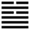

Thủy Thiên Nhu (需 xū)
Quẻ trên là Mông, nhỏ thơ; nhỏ thơ thì cần được nuôi bằng thức ăn, cho nên quẻ này là Nhu. Chữ Nhu này [ 需 ] là chữ nhu trong “nhu yếu phẩm”, những thứ cần thiết, tức thức ăn. Tự quái truyện giảng như vậy.
Nhưng Thoán Từ thì lại giải thích khác: Nhu đây còn có nghĩa nữa là chờ đợi, và theo cái tượng của quẻ thì phải hiểu là chờ đợi.
Thoán từ :
需: 有 孚, 光 亨, 貞, 吉 ． 利 涉 大 川 ．
Nhu: Hữu phu, quang hanh, trinh, cát. Lợi thiệp đại xuyên.
Dịch: Chờ đợi: có lòng thành thực tin tưởng, sáng sủa, hanh thông, giữ vững điều chính thì tốt. “Dù gặp việc hiểm như qua sông cũng sẽ thành công.
Giảng: Nội quái là Càn, cương kiện, muốn tiến lên nhưng gặp ngoại quái là Khảm (hiểm) chặn ở trên, nên phải chờ đợi.
Hào làm chủ trong quẻ này là hào 5 dương, ở vị chí tôn (ở quẻ này nên hiểu là ngôi của trời – theo Thoán truyện) mà lại trung, chính; cho nên có cái tượng thành thực, tin tưởng, sáng sủa, hanh thông; miễn là chịu chờ đợi thì việc hiểm gì cũng vượt được mà thành công.
Đại tượng truyện giải thích cũng đại khái như vậy: dưới là Càn, trời, trên là Khảm, mây (Khảm còn có nghĩa là mây); có cái tượng mây đã bao kín bầu trời, thế nào cũng mưa; cứ “ăn uống yến lạc” (ẩm thực yến lạc) yên vui di dưỡng thể xác và tâm chí mà đợi lúc mưa đổ.
Ý nghĩa các hào :
1. 初 九: 需 于 郊, 利 用 恆, 无 咎.
Sơ cửu: Nhu vu giao, lợi dụng hằng, vô cữu.
Dịch: Hào 1 là dương, cương kiện, sáng suốt mà ở xa ngoại quái là Khảm, tức xa nước, xa chỗ hiểm (cũng như còn ở ngòai thành, không gần sông nước), đừng nóng nảy xông vào chỗ hiểm nạn, cứ chịu chờ đợi thì không có lỗi. Chu Công khuyên như vậy vì hào dương này không đắc trung mà có ý muốn tiến.
2. 九 二: 需 于 沙, 小 有 言, 終 吉 ．
Cửu nhị: Nhu vu sa, tiểu hữu ngôn, chung cát.
Dịch: Hào 2, dương: Đợi ở bãi cát, tuy có khẩu thiệt một chút, nhưng sau sẽ tốt.
Giảng: Hào này đã gần quẻ Khảm hơn, ví như đã tới bãi cát ở gần sông, chưa tới nỗi sụp hiểm; mà hào lại đắc trung, cho nên tuy là dương cương mà biết khôn khéo, ung dung, không nóng nảy như hào 1, cho nên dù có điều tiếng nho nhỏ, rốt cuộc cũng vẫn tốt.
3. 九 三 : 需 于 泥 ． 致 寇 至．
Cửu tam: Nhu vu nê, trí khấu chí.
Dịch: Hào 3, dương : đợi ở chỗ bùn lầy, như tự mình vời giặc đến.
Giảng: Hào này đã ở sát quẻ Khảm, tuy chưa sụp xuống nước, nhưng đã ở chỗ bùn lầy rồi; thể của nó là dương cương, vị của nó cũng là dương, mà lại không đắc trung, có cái “tượng rất táo bạo nóng nảy, làm càn, tức như tự nó vời giặc đến, tự gây tai họa cho nó. Nếu nó biết kính cẩn, thận trọng thì chưa đến nỗi nào, vì tai họa vẫn còn ở ngoài (ở ngoại quái) (theo tiểu tượng truyện).
4. 六 四 : 需 于 血, 出 自 穴 ．
Lục tứ: Nhu vu huyết, xuất tự huyệt.
Dịch: Hào 4, âm: như đã chờ đợi ở chỗ lưu huyết mà rồi ra khỏi được.
Giảng: hào này đã bắt đầu vào quẻ Khảm, tức chỗ hiểm (như vào chỗ giết hại), nhưng nhờ nó là âm, nhu thuận lại đắc chính (ở vị âm), nên tránh được họa.
5. 九 五 : 需 于 酒 食, 貞 吉 ．
Cửu ngũ: Nhu vu tửu thực, trinh cát.
Dịch: Hào 5, dương: Chờ đợi ở chỗ ăn uống no say (chỗ yên vui), bền giữ đức trung chính thì tốt.
Giảng: Hào 5, địa vị tôn quí, mà là dương cương trung chính, cho nên tốt, nhưng muốn hạnh phúc được bền thì phải giữ đức trung chính.
6.上 六:． 入 于 穴, 有 不 速 之 客 三 人 來, 敬 之, 終 吉 ．
Thượng lục: Nhập vu huyệt, hữu bất tốc chi khách tam nhân lai, kính chi, chung cát.
Dịch: Hào trên cùng, âm: Vào chỗ cực hiểm rồi, nhưng có ba người khách thủng thẳng tới, biết kính trọng họ thì sau đựơc tốt lành.
Giảng: Hào này ở trên cùng ngọai quái là Khảm, cho nên bảo là chỗ cực hiểm. Nó có hào 3 ở dưới ứng với nó, hào 3 là dương, kéo theo cả hào 1 và 2 cũng là dương, cho nên nói là có 3 người khách sẽ tới; họ không tới ngay được vì họ ở xa hào 6, cho nên nói là họ thủng thẳng sẽ tới.
Hào 6 âm, có đức Khiêm, nhu thuận, biết trong và nghe theo ba vị khách đó, cho nên cuối cùng sẽ được họ cứu ra khỏi chỗ hiểm mà được tốt lành.
Tiểu tượng truyện: bàn thêm: Tuy hào 6 không xứng vị (bất đáng vị), nhưng không đến nỗi thất bại lớn.
Chu Hi hiểu chữ “vị” đó, là ngôi chẵn (âm vị) ; hào âm ở âm vị, là “đáng” chứ sao lại “bất đáng”, cho nên ông bảo là :”chưa hiểu rõ” (vị tường).
Phan Bội Châu hiểu chữ “vị” là ngôi cao hay thấp; hào 6 ở trên cùng, tức là ngôi cao nhất, mà là âm nhu, bất tài, cho nên bảo “bất đáng” là phải.
Quẻ này chỉ cho ta cách xử thế khi chờ đợi, tùy họa ở gần hay ở xa, cốt nhất là đừng nóng nảy, mà phải giữ trung chính. Chúng ta để ý: hào 5 ở giữa quẻ Khảm, tức giữa cơn nguy hiểm mà Chu Công vẫn cho là tốt chỉ vì hào đó cương mà trung chính, nghĩa là cương một cách vừa phải, sáng suốt, chính đáng.